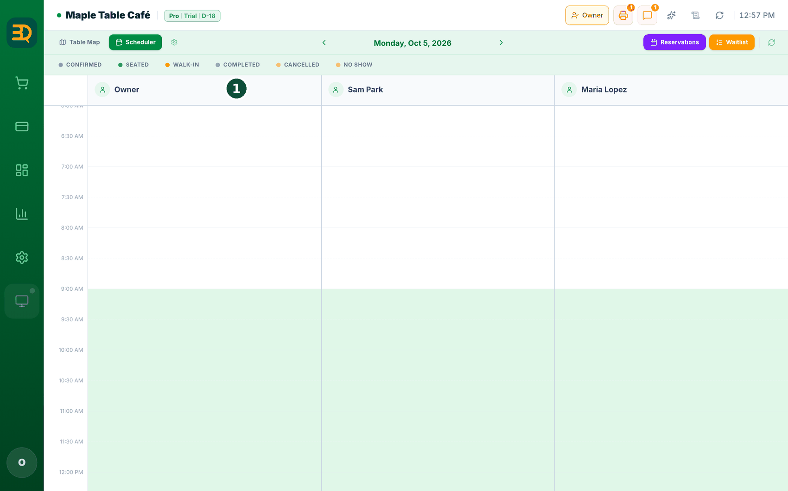
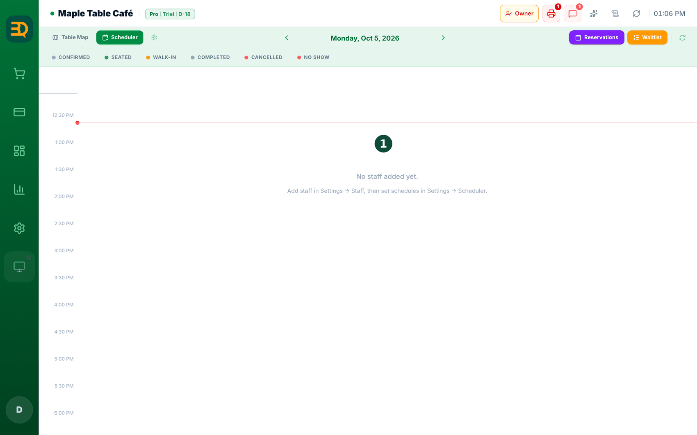
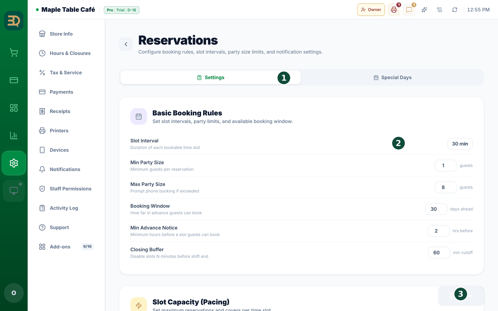
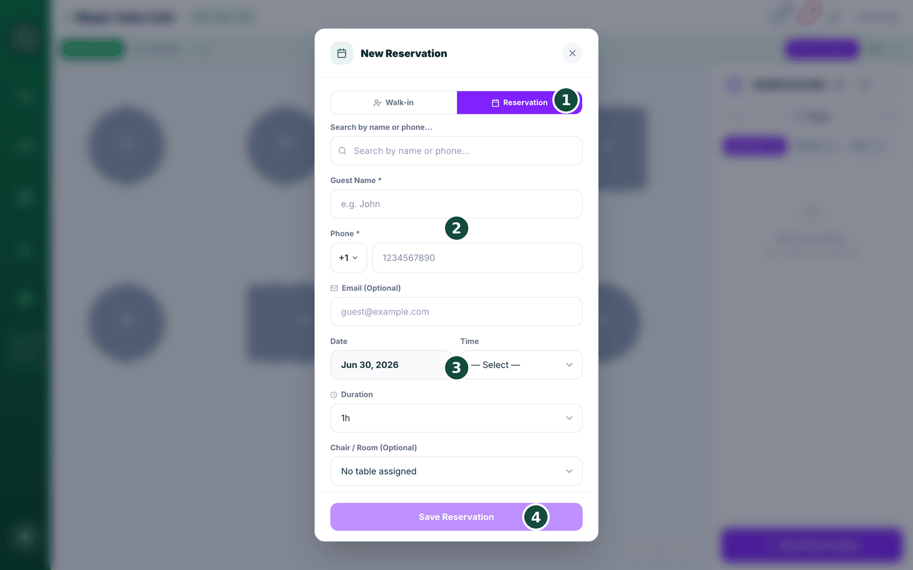
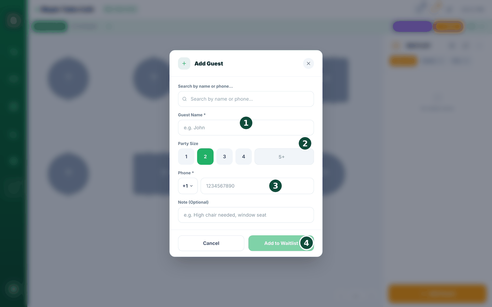

6예약 & 스케줄러
예약은 손님이 오기 전에 테이블이나 시간을 미리 잡아 두는 것입니다. 모든 예약을 한 곳에 모아 둘 수 있습니다. 하나 추가해 보겠습니다.
예약은 Settings › Add-ons › Reservations에서 켭니다(스위치를 눌러 주세요). 먼저 Tables가 켜져 있어야 합니다 — Tables가 꺼져 있으면 "Enable Both" 팝업이 표시되며, 그대로 누르면 됩니다. 미용실·스파의 직원·시간 예약은 같은 곳에 있는 Scheduler(스케줄러) 애드온으로 받으며, Pro 애드온입니다.
시작 전에: Settings › Hours & Closures에서 영업시간을 정해 주세요. 예약은 영업 중인 시프트 안에 드는 시간만 표시합니다 — 따라서 어떤 시간이 보이지 않으면 먼저 영업시간을 확인해 주세요.
- 예약 페이지를 엽니다. Table Map에서 "Reservations"(오른쪽 위)를 탭하거나, 위쪽 Scheduler(스케줄러) 탭을 엽니다. (Scheduler 탭은 Pro 플랜에서 Scheduler 애드온을 켠 경우에만 표시됩니다.)
- 달력에서 원하는 날을 탭합니다.
- "New Reservation"을 탭합니다. 양식이 열립니다.
- 손님 이름(Guest Name), 전화(Phone)(둘 다 필수), 날짜(Date), 시간(Time)을 입력합니다. 이메일(Email)은 선택이고, 소요 시간(Duration)은 기본 1시간입니다. 식당·카페 같은 테이블 매장에서는 인원(Guests)도 선택합니다(1~4명, 5명 이상은 직접 입력). 미용실·스파 형태의 매장에는 인원 칸이 없습니다.
- 선택 사항: 테이블(Table)(미용실·스파는 Chair / Room)과 직원(Staff)을 선택하고 메모(Note)를 추가합니다. 미용실이나 스파라면 직원을 선택하는 것이 가장 중요합니다.
- Save를 탭합니다. 손님은 "예약되었습니다" 확인을 자동으로 받습니다 — 설정한 방식에 따라 이메일, SMS, WhatsApp으로 전달됩니다.
- 예약 손님이 도착하면 예약 카드를 열고 "Check In"을 탭합니다. "Seated"로 바뀝니다 (필요하면 테이블도 배정합니다).
- 예약 없이 들어온 손님이 있다면 "Walk-in" 옵션을 탭합니다 — 바로 손님을 앉힙니다.
설정(Settings) › 예약(Reservations) › Settings 의 Booking Policy & Guest Portal 카드에서 "Auto No-Show on Close"(마감 시 자동 노쇼 처리)를 켜 주세요. 켜면 "마감할 때 그날 확정 상태로 남아있는 예약이 자동으로 노쇼로 처리되고, 각 손님에게 사유를 안내하는 이메일이 발송됩니다." 기본값은 꺼짐입니다. 처리 대상은 아직 Confirmed(확정)로 남아 있는 예약뿐이며, 착석·완료·취소된 예약은 그대로 둡니다. 같은 날을 다시 마감해도 손님에게 메일이 두 번 발송되지 않습니다.손님이 받는 메일은 나무라는 어조가 아닙니다. 제목은 "We couldn't confirm your visit"(방문을 확인하지 못했습니다)이며, 자리를 비워 두었지만 도착을 확인하지 못해 기록을 남겼다는 사실과, 잘못되었다면 매장에 연락해 달라는 안내가 담겨 있습니다.


예약 기능이 기본 내장. 두 번째 앱도, 추가 비용도 필요하지 않습니다. 식당은 테이블을 예약하고, 미용실과 스파는 직원 시간을 예약합니다 — 모두 같은 달력에서 관리합니다.


대기열(Waitlist)
테이블을 기다리는 줄입니다. 대기열은 빈 테이블을 기다리는 손님들의 줄입니다. BrewDesk가 줄을 관리하고, 테이블이 준비되는 순간 손님에게 문자를 보냅니다 — 그래서 손님이 입구에 몰리지 않습니다.
Settings › Add-ons › Waitlist에서 켭니다(스위치를 눌러 주세요). 먼저 Tables가 켜져 있어야 합니다 — 팝업이 표시되면 "Enable Both"를 눌러 주세요.
- Waitlist를 엽니다. Table Map에서 "Waitlist"(오른쪽 위)를 탭합니다.
- "Add Guest"를 탭합니다. 작은 양식이 열립니다.
- 손님의 이름(Name), 인원(Party size), 전화(Phone)(문자를 보낼 수 있도록)를 입력합니다. 메모를 추가해도 되며, 저장합니다.
- 테이블이 비면 해당 손님을 찾아 "Notify"를 탭합니다. 손님은 "테이블이 준비되었습니다" 문자(SMS 또는 WhatsApp)를 받습니다.
- 그런 다음 자리에 앉히면 완료됩니다.
Settings › Store info에 이미 등록해 둔 사진을 그대로 사용하므로 따로 올릴 필요가 없습니다. 전화번호 칸도 매장 국가의 국가번호(+82, +1, +66 …)로 미리 맞춰져 있어서 손님은 번호만 입력하면 됩니다.